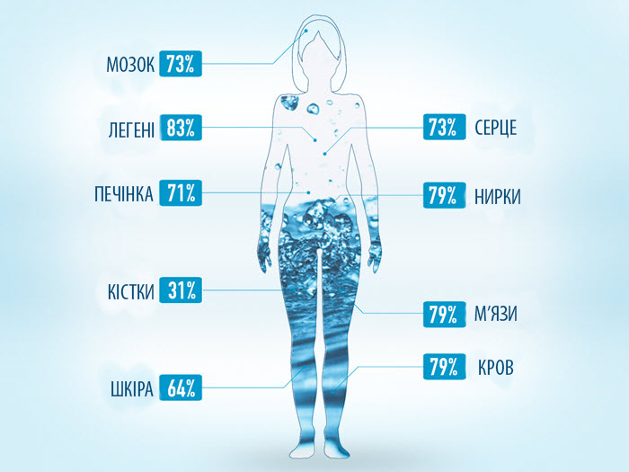
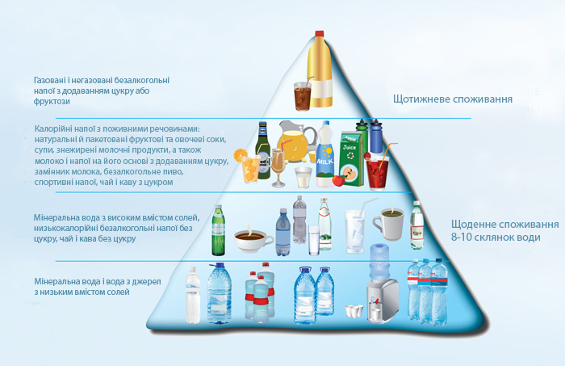

Все про воду
…«Вода! У тебе немає ні смаку, ні кольору, ні запаху, тебе неможливо описати, тобою насолоджуються, не відаючи, що ти таке. Не можна сказати, що ти необхідна для життя, ти – саме життя! ».
Антуан де Сент-Екзюпері
Вода – джерело життя, краси і здоров’я
Вода – найважливіший компонент не тільки оточуючого нас світу, але і людського організму. Без води, життя на нашій планеті було б неможливе. Ми часто забуваємо про цей, здавалося б, простий і очевидний факт. Але варто тільки нам відчути найменші ознаки спраги, стає зрозумілим вся важливість і необхідність води.
Вода є другим, після кисню, найважливішим елементом життя людини на Землі. Все живе навколо більше ніж на половину складається з води. Вода є також однією з головних складових людського організму. Про надзвичайну важливість води красномовно говорять цифри: В середньому 70% маси тіла дорослої людини становить вода. Наш мозок на 73% складається з води, легені – на 83%, шкіра – на 64%. Вода міститься навіть в кістках (близько 31%).
При недостатньому вживанні рідини її процентний вміст в нашому організмі падає, викликаючи погіршення самопочуття і порушуючи роботу внутрішніх органів. Крім того, вода просто необхідна нам, щоб зберегти на довгі роки не тільки красу і сяйво шкіри, але і ясність думки, гостроту розуму, пружність м’язів.
Як стверджує доктор Луїс Сьєрра-Майем, який очолює іспанську Академію харчування і харчових наук, скорочення рівня води в організмі лише на 2% може привести до зниження розумових і фізичних здібностей майже на 20%. У цьому випадку людина втрачає можливість мислити ясно і здатність обробляти інформацію, знижується працездатність. Більш відчутні втрати води (від 3% до 8% від маси тіла) можуть привести до запаморочення, ниркової недостатності, збільшення частоти серцевих скорочень, ускладнене дихання *.
Роль води в організмі людини
Вода грає ключову роль, виконуючи ряд важливих функцій в організмі людини:
- Допомагає травленню, полегшуючи засвоєння їжі.
- Розчиняє поживні речовини: вуглеводи, вітаміни, мінерали, сприяючи їх всмоктуванню в кров і прискорюючи їх транспортування до клітин.
- Сприяє виведенню токсинів і надлишку поживних речовин з організму.
- Зберігає еластичність і м’якість шкіри, а також сприяє нормалізації кольору шкіри.
- Регулює температуру, розсіюючи тепло всередині тіла, і захищає організм від перегріву або переохолодження.
- Відіграє значиму роль для нормального функціонування серця і нирок, нормалізації артеріального тиску.
- Допомагає зменшити навантаження на суглоби і сприяє правильному функціонуванню м’язів.
Щоб завжди, у будь-яку погоду і в будь-якому віці, відчувати себе відмінно і виглядати молодо і свіжо, необхідно пити достатню кількість природної води, адже вона відіграє ключову роль у підтримці гідробалансу організму.
Доктор наук Луїс Сьєрра-Майем розробив так звану «піраміду напоїв», яка відображає потреби людини в рідини протягом дня і тижня. Цікаво, що основу основ цієї піраміди складає природна мінеральна вода, яку необхідно пити щодня в достатній кількості. Саме вона повинна складати основу водного раціону будь-якої людини.
Фахівці всього світу рекомендують саме природну мінеральну воду, яка народжується в надрах землі і фільтрується лише шарами грунту. Така вода містить оптимально-необхідну кількість мінералів і мікроелементів для нормального функціонування всіх систем організму.
Перефразовуючи «батька медицини» Гіппократа, можна з упевненістю сказати: «Ми є те, що ми п’ємо». Згідно з цим твердженням, безумовно дуже важливо стежити не тільки за кількістю, але і особливо за якістю споживаної води, робити вибір усвідомлено, звертаючи увагу на місце видобутку і розливу води, її природне походження, мінеральний склад і інші важливі параметри, віддаючи перевагу великим, відомим виробникам, які контролюють якість своєї продукції на всіх етапах виробництва.
Maecenas lacinia felis nec placerat sollicitudin. Quisque placerat dolor at scelerisque imperdiet. Phasellus tristique felis dolor.
Maecenas elementum in risus sed condimentum. Duis convallis ante ac tempus maximus. Fusce malesuada sed velit ut dictum. Morbi faucibus vitae orci at euismod. Integer auctor augue in erat vehicula, quis fermentum ex finibus.
Mauris pretium elit a dui pulvinar, in ornare sapien euismod. Nullam interdum nisl ante, id feugiat quam euismod commodo. Sed ultrices lectus ut iaculis rhoncus. Aenean non dignissim justo, at fermentum turpis. Sed molestie, ligula ut molestie ultrices, tellus ligula viverra neque, malesuada consectetur diam sapien volutpat risus. Quisque eget tortor lobortis, facilisis metus eu, elementum est. Nunc sit amet erat quis ex convallis suscipit. ur ridiculus mus.